1996.
Você é Carlos Alexandre Bueno, um funcionário público. Trabalha em um banco, não tem muitos amigos e nem visitaos parentes com frequência, sendo que seus pais faleceram no último ano.
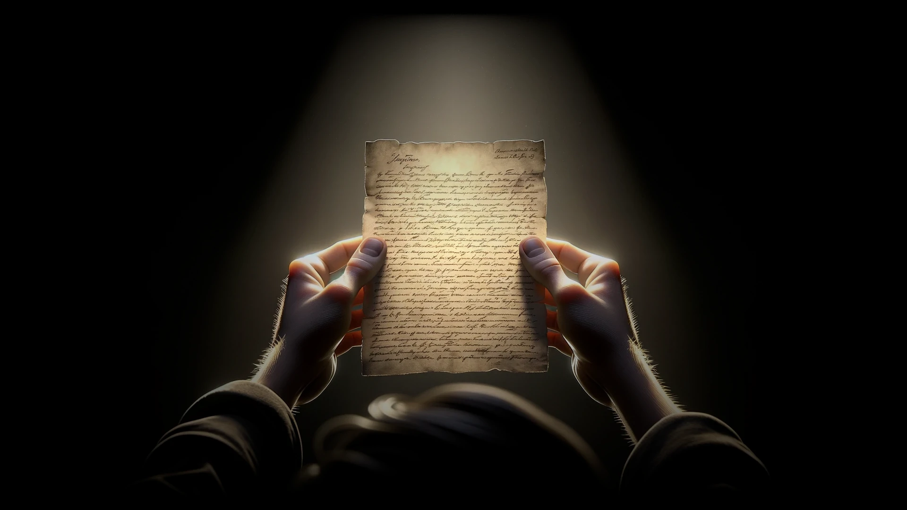É com surpresa, portanto, que recebe uma carta informando que está prestes a receber uma herança.
Você deverá comparecer ao escritório do advogado antes do próximo sábado para acertar os detalhes da herança deixada por Silvio Schatner.
O nome não lhe parece completamente estranho...
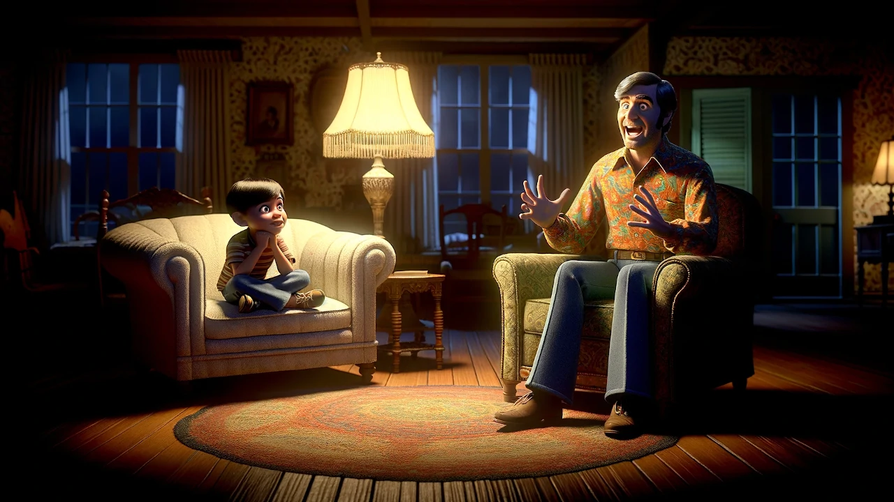Você acaba lembrando-se de sua infância, quando às vezes seus recebiam a visita de um tio esquisito, que contava histórias sobre coisas inexplicáveis religiões antigas e culturas bizarras.
Essas histórias davam-lhe arrepios e por muitas vezes não conseguia dormir, mas gostava de ouvi-las.
Há muito tempo não ouvia falar em Silvio e, não fosse por esta carta, dificilmente iria se recordar dele.
Estranho... Não eram parentes próximos.
Por que Silvo lhe deixaria uma herança?
Seria realmente o mesmo Silvio que conheceu?
Curioso, você decide ver o advogado.
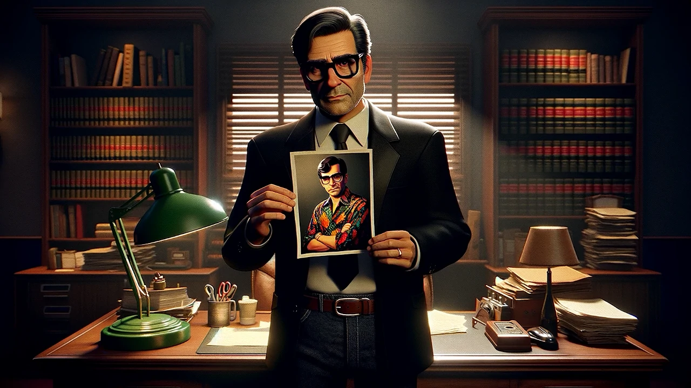No escritório o advogado confirma suas lembranças, mostrando fotos que eram realmente do estranho tio Silvio.
Você fica sabendo também que pouco antes de morrer, Silvio achava-se internado em um sanatório - mas o testamento foi escrito anos antes, quando ainda estava são, e, portanto, é válido.
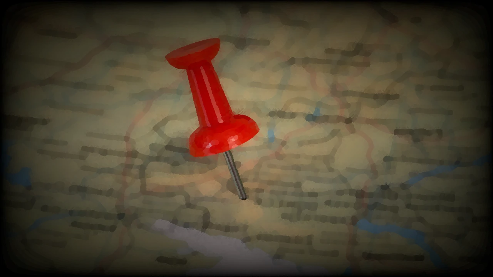Mais curioso ainda era que a leitura do testamento deveria ser feita na antiga casa de Silvio, em uma cidadezinha do interior chamada Guardudo, às 23h00 do próximo sábado.
Vá para 1.
Você decide ir à leitura do testamento, curioso com as condições e também para saber o que Silvio teria lhe deixado. Sábado, logo após o almoço, você ruma para o escritório do advogado.
Chegando lá o encontra à sua espera, bem como outros dois herdeiros, um homem e uma mulher.
Nenhum deles é familiar.
Mais tarde você descobre tratar-se de Boris, um antigo colega de faculdade de Silvio, e Kátia, outra parente distante que também não via há anos.
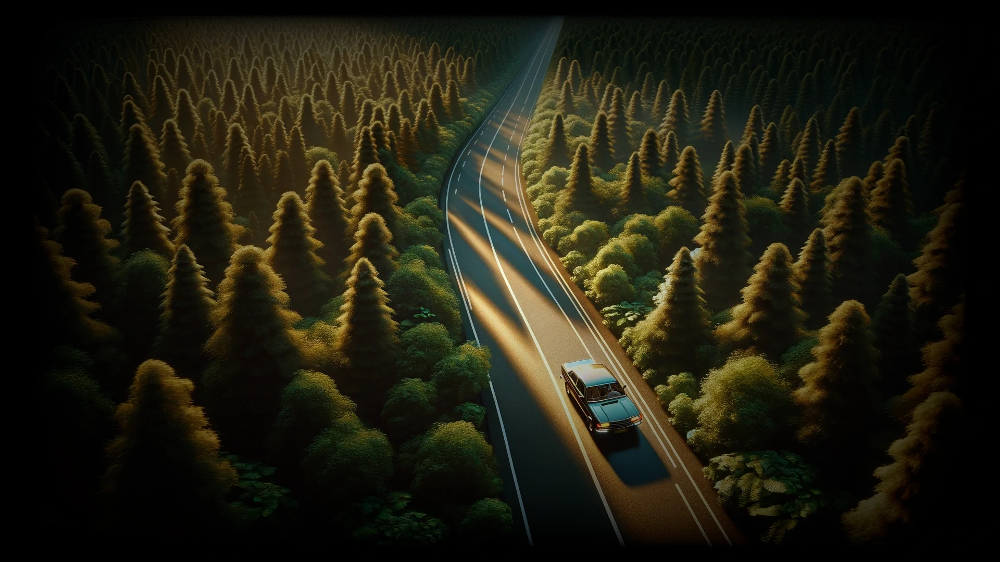Foram todos no carro do advogado. A viagem para Guardudo leva algumas horas; talvez não demorasse tanto se não errassem o caminho duas vezes.

Afinal, não havia placa alguma indicando a pequena estrada de terra que leva até a cidade.
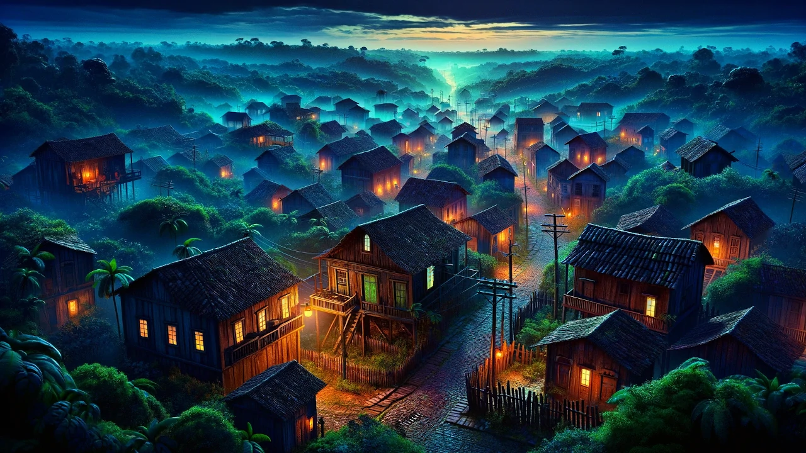Guardudo parece uma cidade saída do começo do século 20, cercada por uma imensa mata virgem. A população talvez não chegasse a mil habitantes...
E as poucas pessoas nas ruas trajam roupas extremamente fora de época, peças de museu.
Na rua principal, de onde podem ser vistas as fronteiras norte e sul de Guardudo, com um simples giro de cabeça, vocês decidem informar-se sobre a localização da casa de Silvio.
Como viaja no banco da frente, você desce do carro para pedir a informação.
Há apenas duas pessoas por perto, um senhor de idade sentado nos degraus de entrada de uma casa e um garotinho brincando na rua.
O que fazer?
Perguntar ao velho, vá para 27.
Perguntar ao garoto, vá para 9.
Você não pretende confiar nas leis desta cidade de loucos.
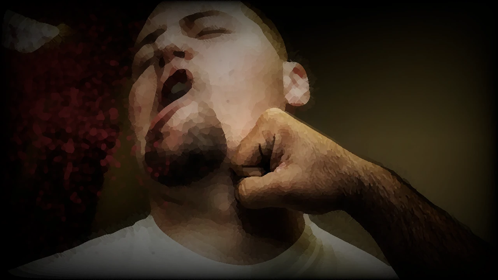Caminha na direção da saída e, quando o guarda segura seu braço para detê-lo, o nervosismo faz com que você o derrube com um soco incrivelmente certeiro no rosto.
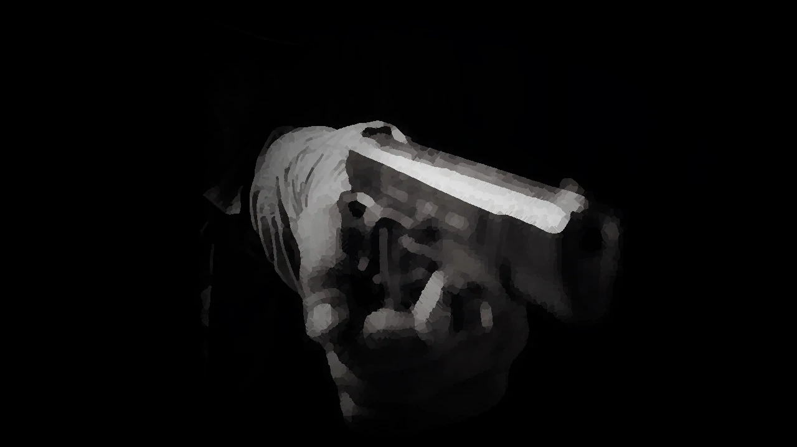O delegado puxa a arma, dando-lhe a certeza de que você está lidando com lunáticos.
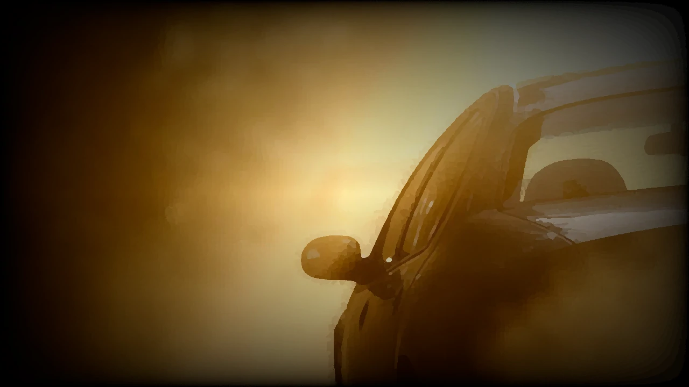Felizmente consegue chegar até o carro e dirigir de volta para à casa.
Para sua surpresa, ninguém o segue.
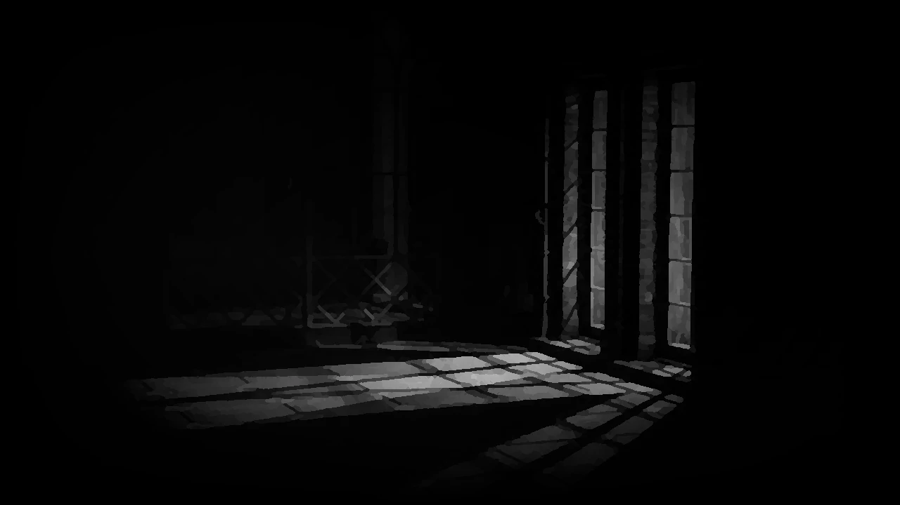Chegando lá, você descobre que Boris não está. Foi à cidade para descobrir o que estava acontecendo.
Depois de ouvir o que aconteceu, o advogado pede calma a todos e sugere que esperem pela volta de Boris antes de tomar qualquer atitude.
Vá para 31.
Você se atraca com a mulher e começam uma luta feroz. Ela é muito mais forte do que parece. Você não consegue deter suas mãos quando elas se fecham em volta de seu pescoço.
Seus olhos enchem-se de sangue e em poucos instantes o ar não chega mais a seus pulmões.
Pouco depois, você não precisa mais de ar: mortos não respiram.
Fim da linha.
☠
Você chegou a um dos possíveis fins desta aventura.
Você abre a porta do porão e desce cuidadosamente, com cuidado para que a vela não apague. Chegando lá embaixo, nota que tudo à volta parece destruído.
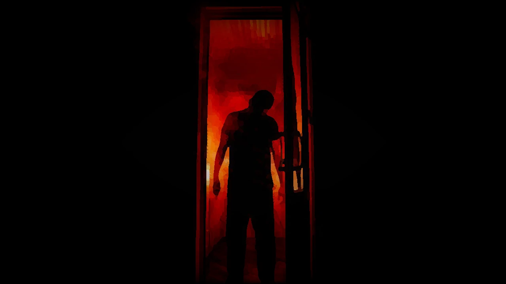Aquele deve ser o prisioneiro que vem em sua direção.
Quem o teria trancado aqui?
O homem usa roupas rasgadas e apodrecidas, que exalam um forte cheiro de carniça. A aparência dele parece estranha sob a luz da vela.
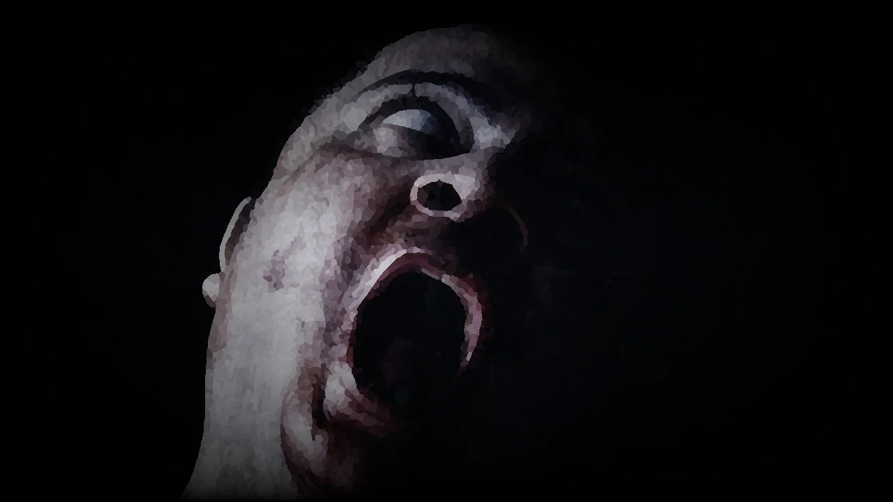Seus olhos estão perdidos no vazio e sua pele é muito pálida.
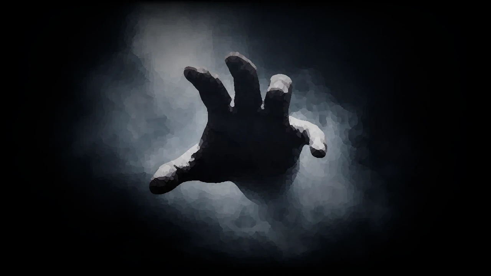Quando se prepara para falar com ele, uma mão veloz fecha-se à volta de seu pescoço e começa a apertar.
Você está tão surpreso que não consegue reagir.
Sua garganta é esmagada.
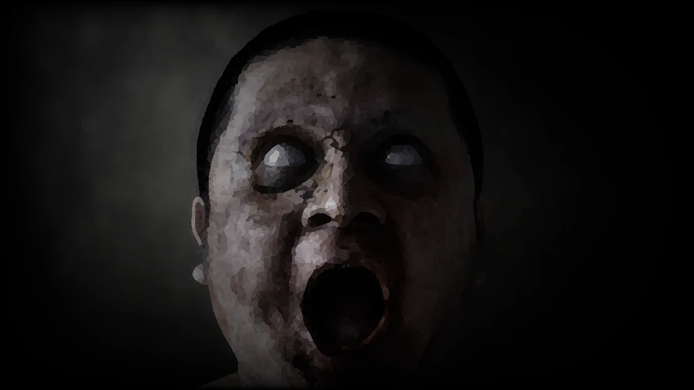Sua última visão antes que a vela caia são aqueles olhos esbranquiçados, fixos, desejosos de morte...
Fim da linha.
☠
Você chegou a um dos possíveis fins desta aventura.
A madeira parece uma boa arma. Você segura-a e bate com força nas costas da mulher, mas ela nem parece se incomodar.
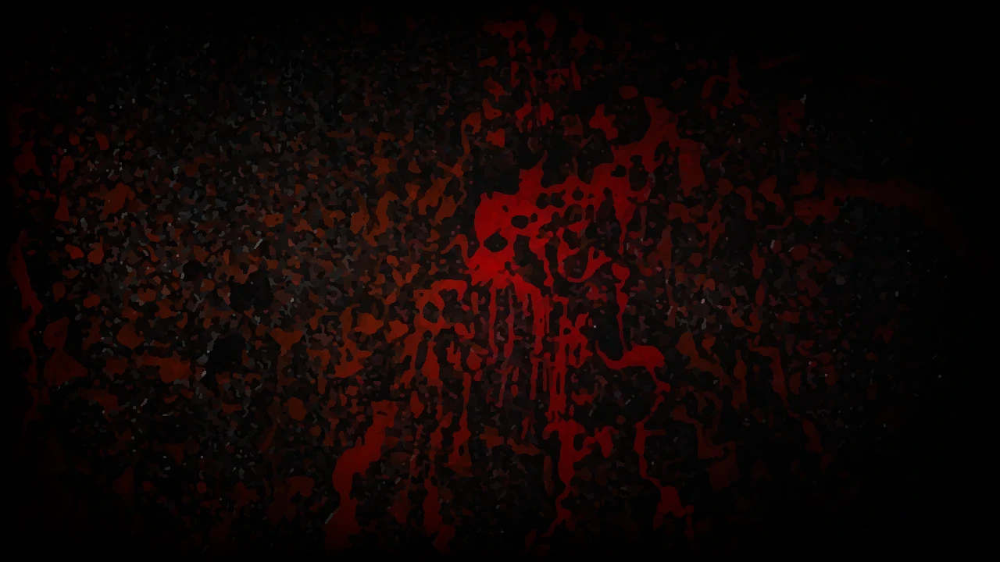A mulher continua despedaçando a garganta do advogado como se as violentas pauladas em seu dorso não fossem nada.
O que fazer?
Atacar a mulher com fogo do lampião, vá para 15.
Agarrar a mulher para tentar afastá-la do advogado, vá para 3.
Fugir, vá para 12.
Você resolve acabar de vez com o mal que assola esta região, antes que ele se espalhe.
Coloca o medalhão no pescoço, pega os potes, os papéis e segue na direção da floresta.

Seguindo as indicações de Silvio, você encontra uma trilha que não parece ser usada há anos.
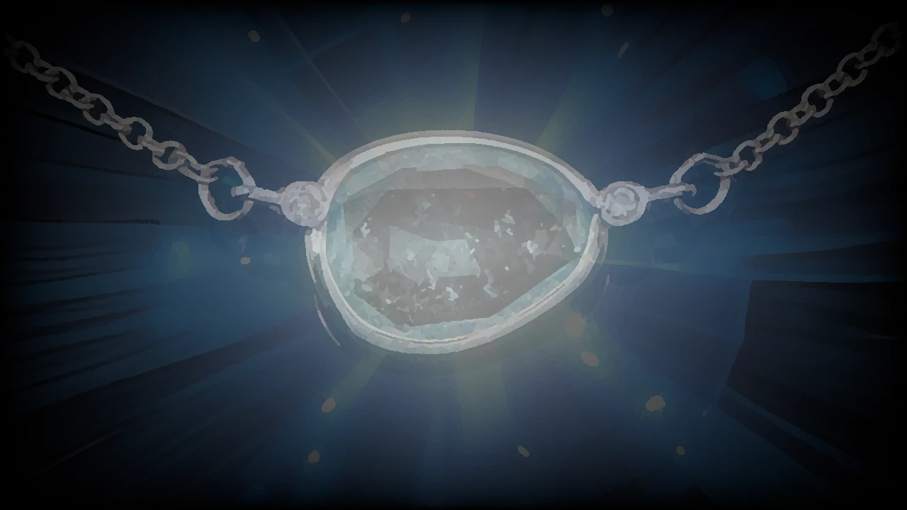Entrando na trilha você percebe uma luminosidade azul irradiando do medalhão. Ao mesmo tempo sente uma opressão indefinida, uma sensação de horror.
As árvores parecem se fechar à sua volta mas se afastam quando você avança. Quanto mais você penetra na floresta, mais intensamente brilha o medalhão e maior é a sensação de que os galhos tentam agarrá-lo.
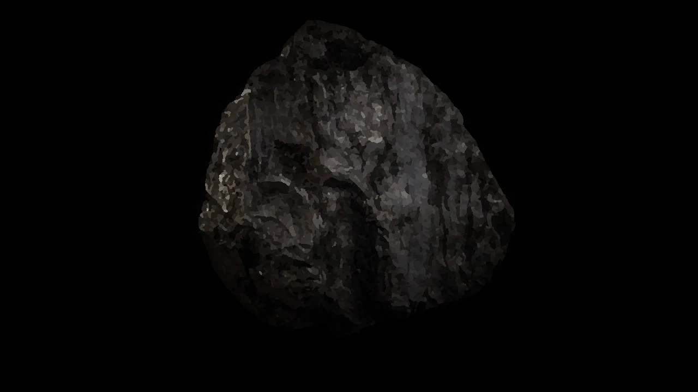Ao final da trilha você encontra uma grande pedra negra. No centro dela há um buraco de onde sai labaredas. É o local onde se deve realizar o ritual.
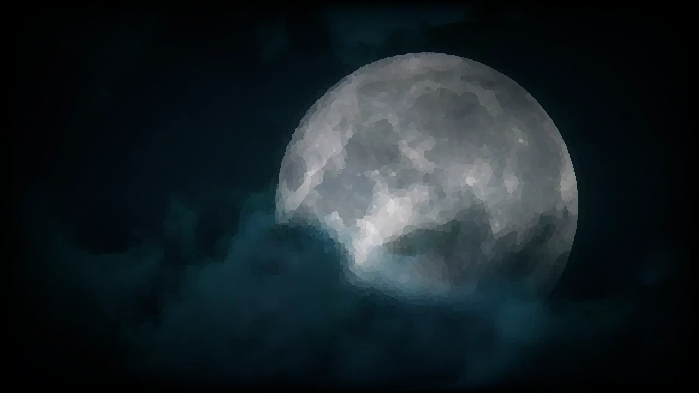Você lê as instruções mas parte delas está borrada pelo tempo e, apesar da lua cheia, a luz é fraca demais para garantir uma boa leitura. Apesar disso, você acha que ainda é possível realizar o ritual.
O que fazer?
Tentar, vá para 26.
Ir embora, vá para 24.
Dentro do quarto você se sente mais seguro. Parece uma antiga biblioteca, mas os livros estão todos podres e espalhados pelo chão.
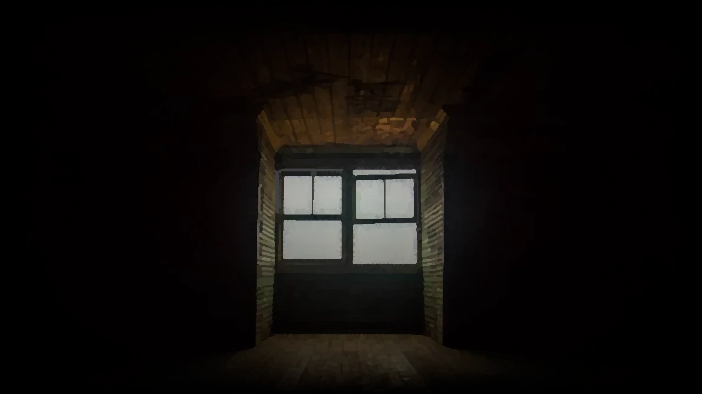Enquanto seus nervos recuperam-se do susto e você pondera sobre o que fazer, algo chama sua atenção do lado de fora da casa.

Abaixo da colina, andando pela estrada e portando tochas, muitas pessoas caminham em procissão. Vestem túnicas e cantam em uma língua que soa como latim ou coisa parecida.
Pela quantidade de pessoas, toda a população da cidade deve estar ali. Observando mais atentamente você percebe que estão levando um estandarte.
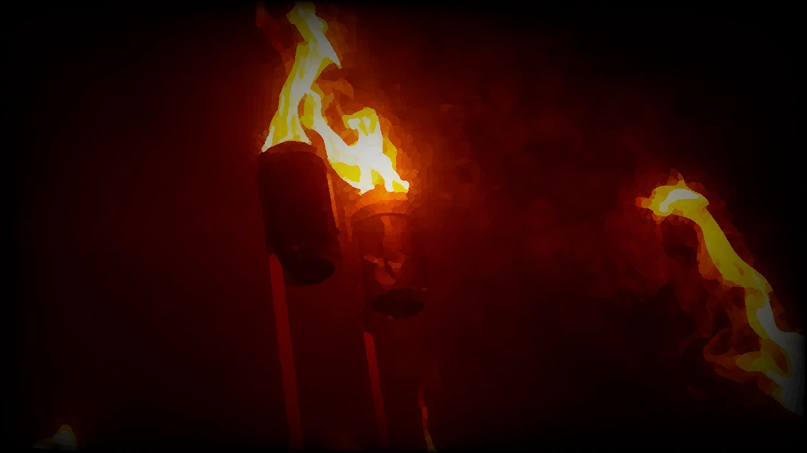Mas, em vez de bandeira, o mastro traz o que parece ser um corpo humano!
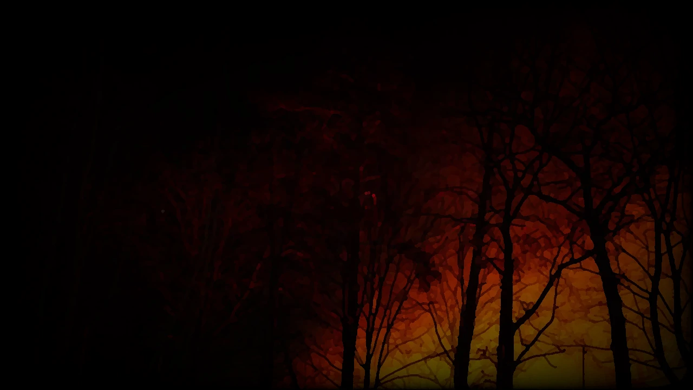A procissão segue e penetra na floresta perto da encosta da colina.
Será que Silvio estava certo? Estariam eles indo à tumba onde as anotações sobre o ritual estão escondidas? Ou essa tumba estaria no cemitério da cidade?
O que fazer?
Seguir a procissão, vá para 10.
Ficar na casa e procurar por Kátia, vá para 22.
Ir à cidade, vá para 17.
Para evitar um encontro com outros daqueles seres malditos, você sai pela janela disposto a fugir pela cidade, mas, depois de uma rápida olhada, percebe que o carro sumiu. Terá que ir a pé.
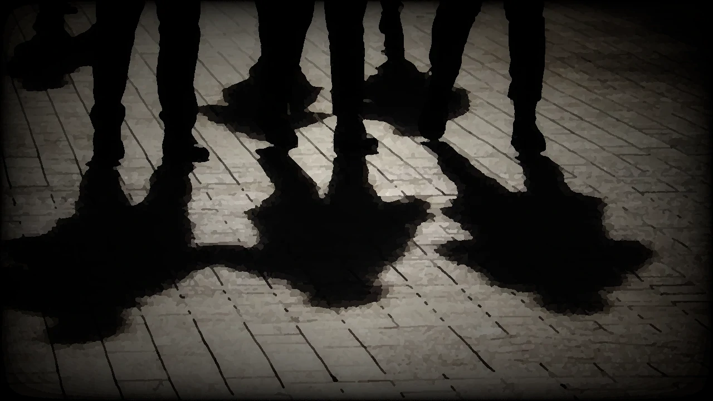Pulando de sombra em sombra você consegue chegar à cidade sem ser notado. Avista um grupo de pessoas conversando na rua. Nenhuma delas viu você ou não lhe dão atenção.
O que fazer?
Falar com eles, vá para 39.
Procurar um carro pra sair da cidade, vá para 19.
Procurar pelo cemitério, vá para 29.
A criança não parece ligar para sua aproximação e continua com o que estava fazendo.
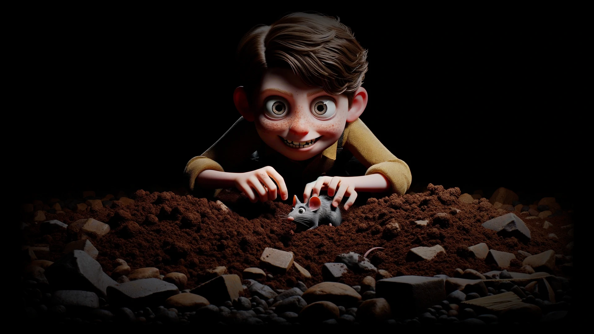Chegando mais perto você percebe que o moleque está enterrando um rato vivo, deixando apenas a cabeça para fora.
Ele diz que não sabe nada sobre nenhum Silvio, mas você lembra que o advogado mencionou “a casa da colina” e pergunta sobre ela.
- A casa da colina eu sei onde é. É a casa do homem mau. Ele ia cabá com todo mundo, mas papai deu um jeito nele e ele foi embora. Você é um homem mau?
Depois de algum trabalho para convencer o garoto de que você não é um “homem mau”, ele indica o caminho até a casa.
Você agradece e reflete sobre a imaginação fértil das crianças - e suas brincadeiras estranhas...
Vá para vá para 37.
Sorrateiramente você sai pela janela e parte na direção da mata. É fácil achar o caminho que tomaram, pois há uma grande trilha aberta.
Logo você começa a escutar os cânticos novamente e chega a uma clareira. Para sua surpresa, todos estão em volta do grande mastro que você viu e a pessoa morta espetada nele é Boris!
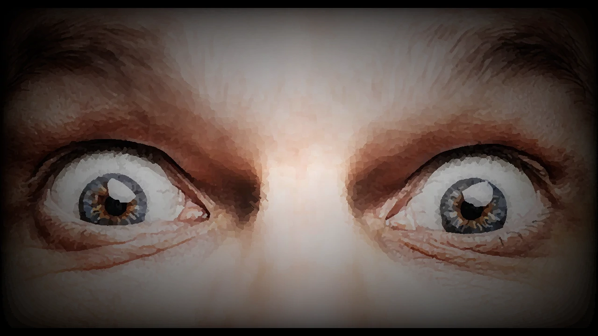O pânico domina seu corpo e você se vira para fugir. Quando está prestes a disparar em corrida, choca-se com uma árvore.
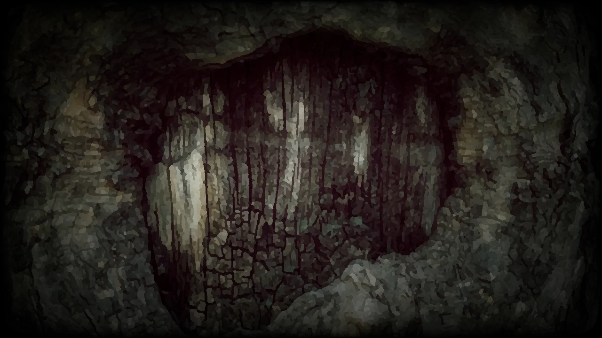Estranho, não parecia estar ali antes.
Tenta dar a volta, mas acaba enroscando-se em um punhado de cipós. Parece loucura, coisa de pesadelo, mas quanto mais você se debate mais os cipós apertam.
Você finalmente se dá conta de que não é apenas seu pânico: os cipós estão realmente o amarrando.
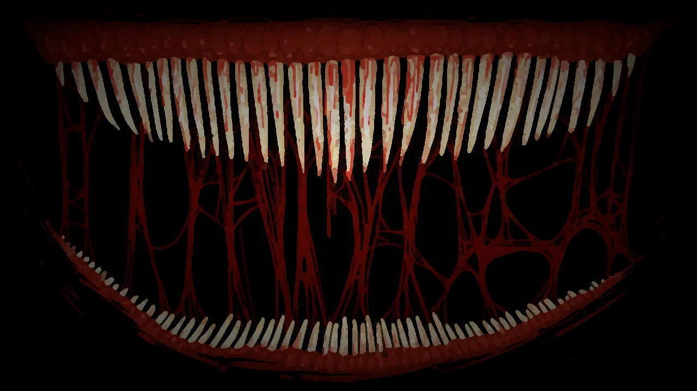Quando está totalmente preso, sem conseguir mover um músculo, a última coisa que você vê em vida é uma monstruosa e enorme abertura parecida com uma boca se abrindo no tronco da árvore...
Fim da linha.
☠
Você chegou a um dos possíveis fins desta aventura.
Você se lembra do testamento, que mencionava algo sobre uma criatura presa no porão. Não acreditou a princípio, mas agora a ideia já não parece tão absurda.
Você evita o porão, entra no quarto e tranca a porta por dentro.
Depois de algum tempo não há mais barulho lá fora. Talvez aquele monstro tenha ido embora.
Vá para vá para 7.
Temendo que as histórias de Silvio sejam reais, você decide fugir. Mas o lampião ficou na entrada, e você se encontra na mais completa escuridão.
Ultrapassa, sem perceber, a escada que leva ao andar de cima. Meio tateando e meio tropeçando, encontra a porta de um quarto e a escada que desce até o porão.
O que fazer?
Entrar no quarto e se trancar lá dentro, vá para 11.
Ir para o porão, vá para 35.
Resignado, você aceita ficar na cela. Deita-se na cama estreita e fica esperando para ver o que acontece.
Com o tempo, acostuma-se ao silêncio, e consegue ouvir a conversa distante entre o guarda e o delegado. Não pode distinguir muita coisa, apenas algumas palavras...
O forasteiro... sacrifício... deus-árvore...
Nada que deixe você mais tranquilo.
Quando acaba de roer todas as suas unhas, você arrisca uma espiada fora da cela. O delegado não está, e o guarda cochila em uma cadeira logo ao lado. A chave é bem visível em seu bolso.
Você poderia pegá-la, mas, se falhar, certamente vai acordá-lo.
O que fazer?
Pegar a chave, vá para 38.
Esperar mais, vá para 23.
Essa cidade é louca! Que se dane a herança!

Você decide que não vai ficar aqui nem mais um minuto e liga o carro. Essa gente quer matá-lo, e dinheiro nenhum no mundo vale isso.
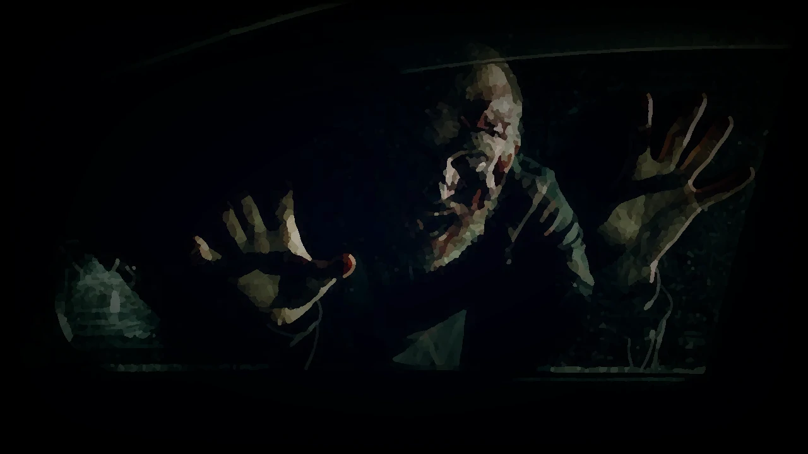Quando passa, as pessoas tentam pará-lo. Algumas se jogam contra o carro.

O pânico faz com que você pise fundo no acelerador, sumindo na estrada de terra que sai da cidade, mesmo sem certeza de que atropelou alguém ou não.
Vá para vá para 33.
Você imagina que existe alguma verdade no bilhete de Silvio. Agarra o lampião e atira contra a mulher.
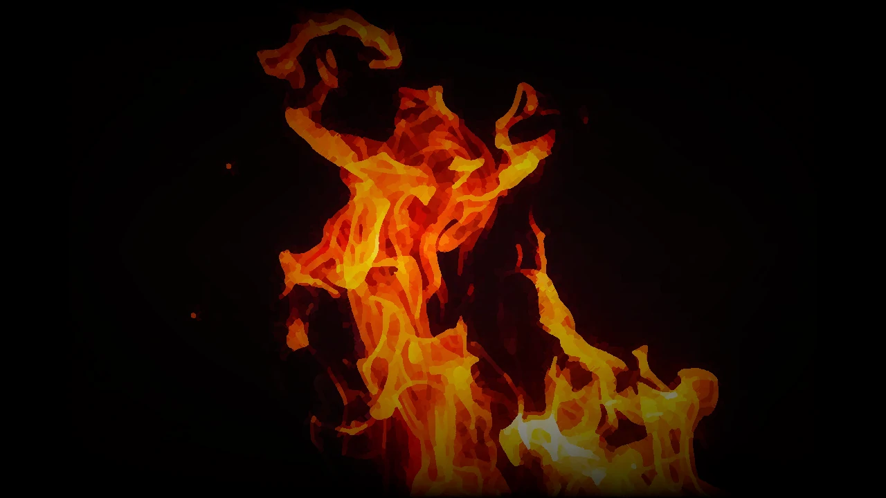O querosene se espalha e transforma-a em uma tocha humana.
Um grito hediondo escapa de sua garganta. Ela queima como papel amassado, muito mais rápido do que um ser humano normal queimaria. Em poucos segundos está reduzida a pó.
É tarde para salvar o advogado. Ele está morto.
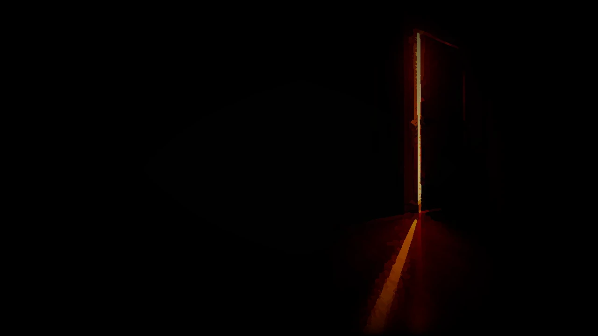Chocado com a cena funesta, você cambaleia sem rumo até entrar em um quarto.
Vá para vá para 7.

Você atira o medalhão contra uma pedra, fazendo-o em pedaços, rezando para que isso complete o ritual. Olha em volta e respira aliviado quando percebe que a agonia da floresta parece ter acabado.
Os espíritos foram embora.
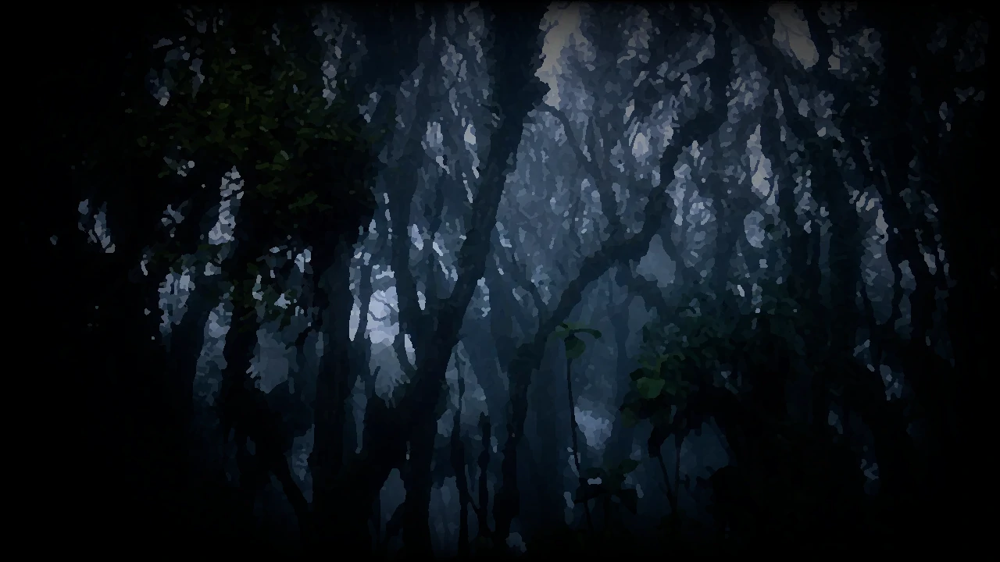Ou talvez não, você pensa quando vê um galho se mover. O pânico se apodera de seu corpo enquanto as árvores arrastam-se em sua direção.
Os demônios ainda estão ali!
Você tenta gritar, mas os cipós enroscam-se em seu pescoço e sufocam seus gritos, enquanto é arrastado na direção da enorme abertura que parece uma boca no tronco de uma árvore.
Seus lamentos jamais serão ouvidos novamente por alguém deste mundo...
Fim da linha.
☠
Você chegou a um dos possíveis fins desta aventura.
Você decide que é melhor ir para a cidade quando nota algumas pessoas abandonando a mata. Elas espalham-se em diversas direções, andando de forma capenga, e parecem estar procurando alguma coisa... ou alguém!
Algumas aproximam-se da casa e é melhor você sair daqui antes que cheguem.
Vá para vá para 8.
Você corre pela casa, chamando por Kátia e Boris. Quase desesperado, cruzando os corredores aos berros, vê alguém saindo de um dos quartos. A onda de alívio que o envolve não dura muito...
É uma mulher, nua, inteiramente banhada em sangue.

Ela avança em sua direção e agarra sua garganta com uma força incrível. Você tenta soltar-se, mas é como lutar com uma estátua sólida.
Não consegue fazer nada quando ela começa a arrancar pedaços seus com mordidas selvagens.
Não há mais escapatória. É o seu fim.
Fim da linha.
☠
Você chegou a um dos possíveis fins desta aventura.
Você decide que é melhor procurar um carro para fugir dessa cidade de loucos o quanto antes.
Essas pessoas provavelmente são tão insanas quanto aquelas que participavam da procissão e não parece boa ideia expor-se assim.
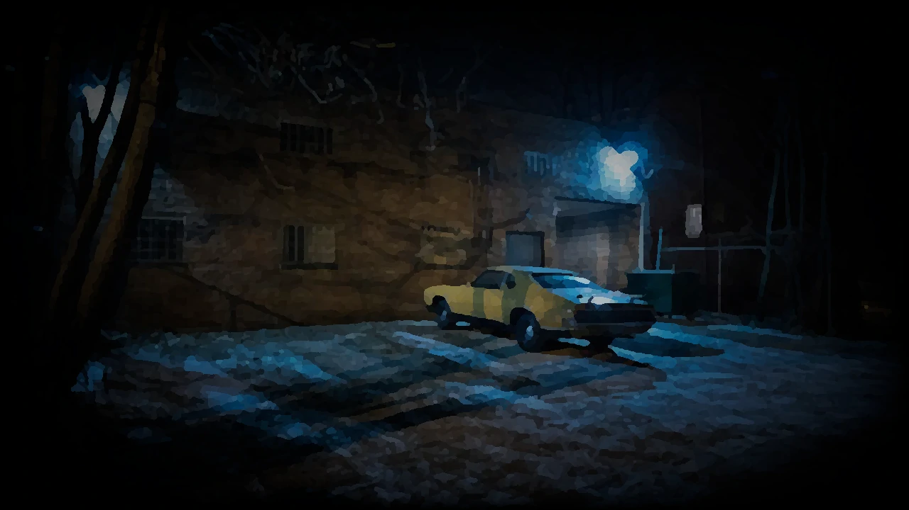Você vasculha a cidade e acaba encontrando o carro do advogado diante da delegacia. As luzes da delegacia estão acesas, mas não há ninguém na rua.
Vá para vá para 36.
Você decide que é melhor não participar do plano de Sílvio. Mesmo que ele esteja certo, a melhor coisa a fazer é escapar daqui.
Você guarda tudo o que pegou e sai do cemitério em busca de um carro que possa usar para sair da cidade.
Chegando a rua principal, você encontra o carro do advogado estacionado diante da delegacia.
Vá para vá para 36.
É melhor que você os acompanhe. Se ninguém fizer isso, eles não os deixarão em paz. Você pega as chaves do carro do advogado e segue-os até a cidade.
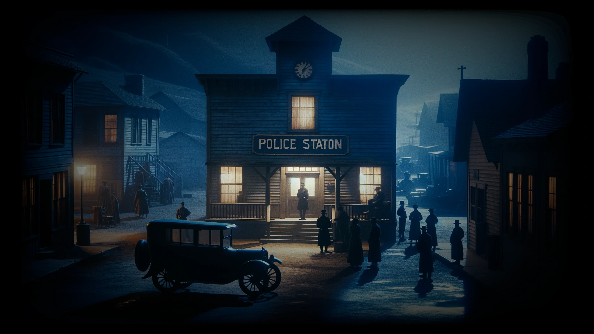Vocês estacionam diante da delegacia e entram. A atitude dos dois fica ainda pior: eles dizem que você desacatou as leis locais e deverá ficar detido até o dia de seu julgamento.
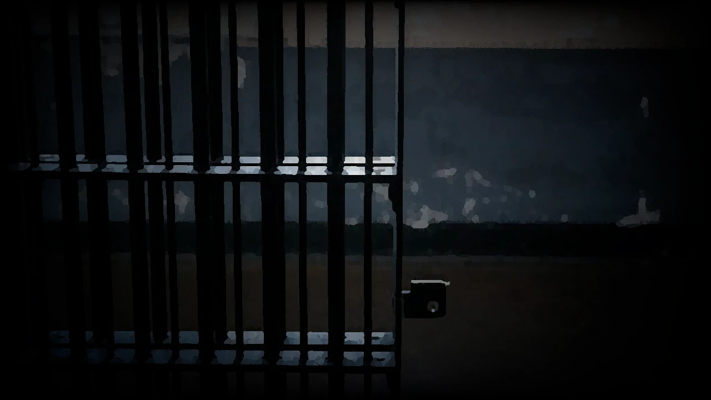Você protesta, alegando que tudo isso é inconstitucional, mas, antes mesmo que você termine essa palavra, um dos guardas abre a porta de uma cela e ordena que entre.
O que fazer?
Tentar fugir desses loucos e voltar a casa, vá para 2.
Aguardar para ver até onde chega essa palhaçada, vá para 13.
Você decide que vai continuar na casa e procurar por Kátia, que deve estar mais apavorada que você (ainda que isso pareça difícil). Tenta deduzir para onde ela teria ido mas não consegue.
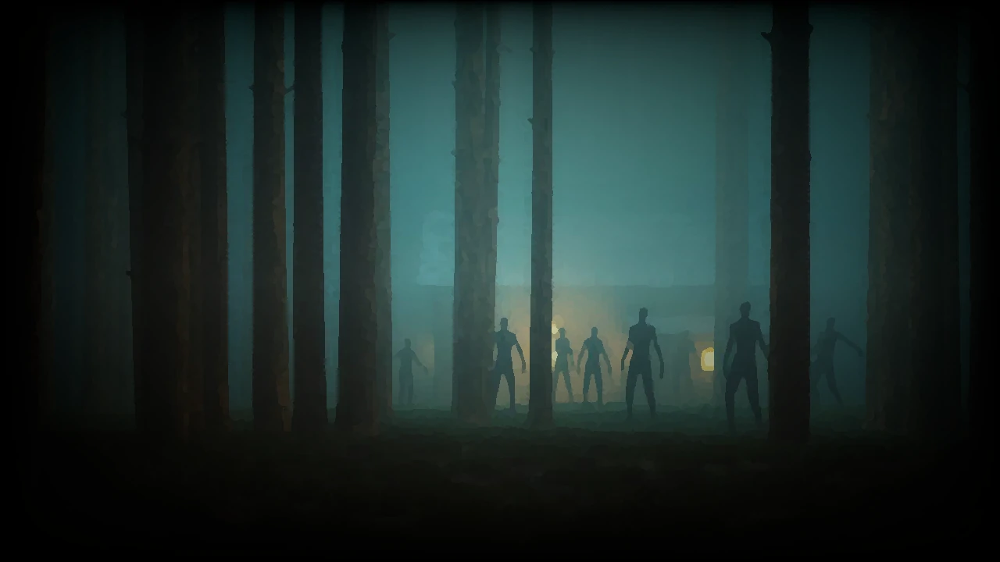Minutos depois, ao passar pela janela, você percebe várias figuras abandonando a mata. Elas têm o mesmo andar desengonçado da mulher que matou o advogado e emitem horríveis sons inumanos.
Algumas delas estão vindo na direção da casa e continuar aqui já não parece uma ideia tão boa.
O que fazer?
Ir à floresta investigar a estranha procissão, vá para 10.
Ir à cidade, vá para 8.
Você aguarda na cela até pouco antes da meia noite, conformado com a ideia de que perderá a leitura do testamento. Quando já começava a dormir, é acordado pelo som de cânticos estranhos:
Alimento para o deus-árvore... Alimento para o deus-árvore...
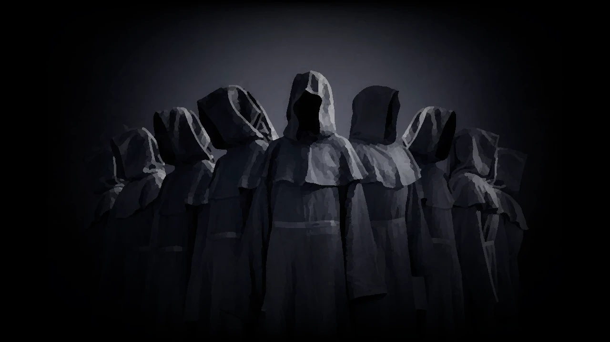Uma pequena multidão entra na delegacia. Todos usam mantos negros e seguram facas. O guarda desperta e pula da cadeira, mas em vez de enfrentar os estranhos...
Tudo o que ele faz é destrancar a porta da cela.
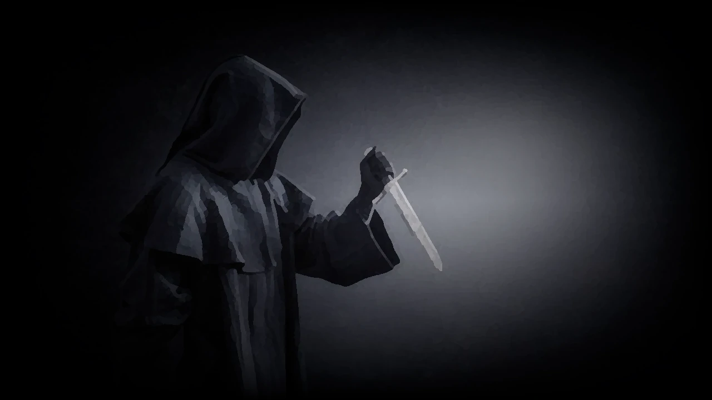As pessoas de manto entram com suas facas.
Você se desespera e tenta reagir...
Eles são muitos...
Quando a primeira lâmina penetra em seu corpo...
Você percebe que é o fim.
Fim da linha.
☠
Você chegou a um dos possíveis fins desta aventura.
Depois de tudo que aconteceu você pensa que não quer correr mais riscos.
O medalhão parece ser a única coisa que o protege nesse lugar maldito e, como dizia a carta, se o ritual falhar a proteção do medalhão termina.
Você tenta encontrar a trilha para retornar a cidade, mas não vê nada. É como se a mata tivesse crescido de novo, em poucos instantes.
Se os espíritos realmente controlam a vegetação, você poderia vagar durante dias sem encontrar coisa alguma. Pelo jeito, sua única esperança agora é completar o ritual.
Vá para vá para 26.
Chegando à casa, você acha estranho quando encontra a porta aberta. Derrubada, na verdade.
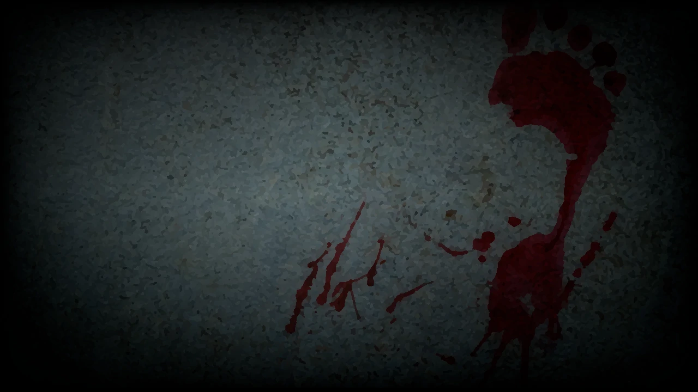Corre para o escritório e cai de joelhos quando encontra o corpo mutilado do advogado.
Feito em pedaços!
Aqueles loucos da cidade devem ter feito isso!
Onde estão os outros? Talvez ainda estejam na casa.
O que fazer?
Procurá-los, vá para 18.
Voltar para o carro e escapar deste pesadelo, vá para 33.

Você começa a realizar o ritual seguindo as instruções dos papéis. Faz movimentos estranhos com as mãos, pronuncia palavras sem sentido... coisas que acharia absurdas em outra situação.
Com o avanço do ritual, a floresta começa a agir de forma estranha. Arbustos farfalham com força, galhos entram em convulsão. A vegetação parece em desespero contra o ritual que está sendo realizado.
Tudo corre bem até perto do final que está quase ilegível. Pelo que você pode perceber, falta a parte que fala sobre a destruição do medalhão. Você não sabe exatamente como ela deve ser feita.
O que fazer?
Quebrar o medalhão, vá para 16.
Jogá-lo no buraco flamejante, vá para 40.
Por ser uma cidade pequena, o velho senhor deve ter conhecido Silvio e provavelmente sabe onde fica sua casa.
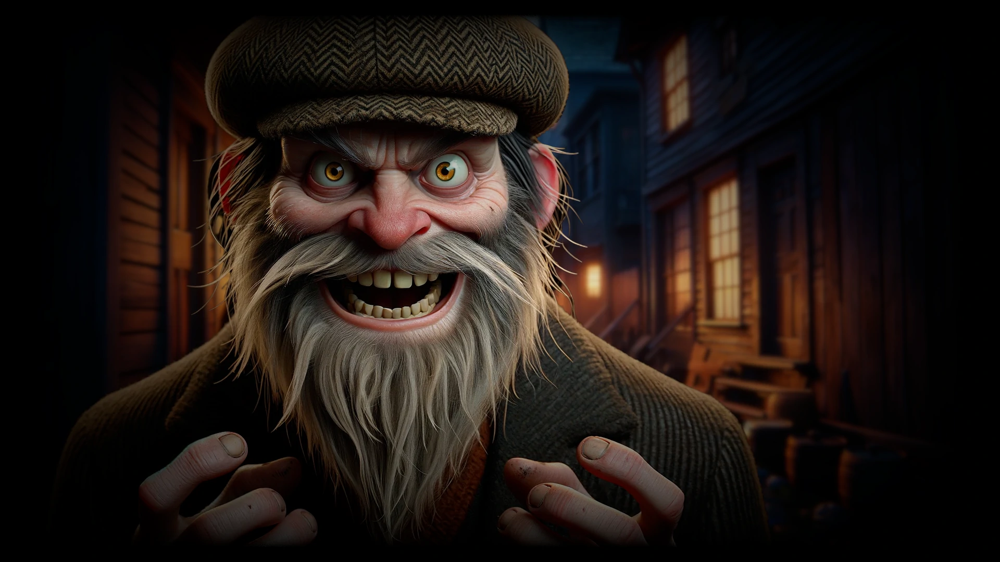Ele olha de maneira estranha quando você se aproxima; um olhar fixo que de alguma maneira faz você gelar.
- A casa de Silvio?
O velho resmunga e dá uma longa pausa.
- Você está vendo aquela colina no fim da rua?
- A casa fica lá em cima, mas vou logo avisando, aqui é um lugar mal assombrado.
- Se vocês ficarem, podem nunca mais voltar pra cidade grande.
- É, pode nunca mais voltar...
- He, he, he...
Você se afasta, enquanto o velho prossegue com sua risada histérica. Melhor ficar longe desse maluco e suas crendices idiotas.
Vá para vá para 37.
Levando uma vela você decide dar uma espiada na casa, que poderá vir a ser sua herança.
É uma grande mansão, mas parece velha e acabada. Se alguém quiser viver nela, deverá pensar em uma boa reforma.
Quando você se prepara para subir até o andar de cima, escuta alguma coisa.
O som vem de uma pequena porta sob a escada. Prestando mais atenção, você percebe que alguém está quebrando alguma coisa lá embaixo.
Alguém está trancado no porão?
O que fazer?
Abrir a porta e ir ao porão, vá para 4.
Voltar ao escritório e esperar pela leitura do testamento, vá para 30.
No princípio não parecia possível acreditar nas histórias de Silvio, mas como continuar incrédulo depois desses acontecimentos?
O testamento dizia que as instruções para expulsar os demônios estavam no túmulo do tal João Sebastião Ferreira. O cemitério da cidade pode ser visto ao longe.
Você pula a janela e, rezando para não ser visto por nenhum daqueles loucos, chega até lá. Consegue pular o muro com certa facilidade. Você começa a procurar pelo túmulo correto.
Olhando para as tumbas, um arrepio começa a percorrer seu corpo: todas estão abertas e vazias! Você não encontra nenhuma tumba com o nome João Sebastião Ferreira.
Talvez ele esteja enterrado no mausoléu no centro do cemitério, mas mesmo assim é fácil supor que seu túmulo esteja aberto como todos os outros.
Entrando no mausoléu você sente um cheiro fétido, próprio de lugares fechados há anos. Logo você percebe a engenhosidade de Silvio: este lugar era reservado apenas a cinzas de corpos cremados.
Como podia haver crematório em uma cidade deste tamanho? Você não faz nenhuma ideia.
Ladrões de cemitério não se interessariam por cinzas e qual o melhor lugar para esconder algo deles senão bem debaixo de suas barbas?
Você acende algumas velas e, rapidamente, encontra a urna que guarda as cinzas de João. Dentro, além das cinzas, estão o medalhão, dois frascos e alguns papéis em péssimo estado.
Com muito cuidado para não estragar os papéis, você começa a lê-los:
Se você está lendo é porque consegui alguém para fazer aquilo que eu mesmo não tive coragem de executar.
As pessoas da cidade são insanas e seus rituais macabros parecem persistir por várias gerações. Os loucos acreditam em deuses-árvores e oferecem sacrifícios a eles em troca da vida eterna.
De certo modo seus mortos realmente se levantam da morte, mas como seres sem vida e sem mente, com sede de sangue: longe de ser uma pessoa com vida eterna...
Depois de muitos estudos consegui achar um ritual para esconjurar os espíritos horrendos que se apossam da floresta.
O medalhão irá proteger o portador contra eles, mas ao final do ritual, a peça deverá ser destruída, se o ritual não for executado corretamente, o medalhão também se tornará inútil.
As instruções para executar o ritual estão anexadas a esta carta e você pode ser a última esperança de expulsar esses seres antes que eles espalhem a sua influência a lugares mais distantes.
A carta aponta ainda o local onde o ritual deve ser realizado: bem no meio da floresta.
Ei, é onde os loucos estão reunidos!
O que fazer?
Arriscar-se a ir à floresta para realizar o ritual, vá para 6.
Fugir da cidade, vá para 20.
Você espera pacientemente no escritório pela leitura do testamento.
Está conversando com o advogado para passar o tempo, até que alguém bate à porta. Vocês vão ver quem é.
Dois homens, um deles trajado como policial, apresentam-se como o prefeito e o delegado de Guardudo. Dizem que vocês não poderiam estar nesta casa sem permissão do Conselho Municipal.
O advogado explica sobre o testamento, mas eles não parecem se importar.
- Só há uma maneira de acertar tudo...
- Um de vocês deve ir à delegacia para explicar tudinho. Caso contrário, não podem ficar aqui.
Você acha tudo isso um absurdo. Não importa que sejam eles, não têm direito nenhum de dizer se vocês podem ou não ficar na cidade, mas parece que não vão deixá-los em paz se alguém não for com eles.
O que fazer?
Acompanhá-los, vá para 21.
Ficar na casa, vá para 32.
O tempo passa vagaroso, e finalmente chega a hora. Boris não retornou, mas não é possível esperar por ele. O testamento deve ser lido agora.
O advogado abre o envelope lacrado e começa a leitura em voz alta.
No documento, Silvio diz que sempre foi um incansável admirador do desconhecido.
Suas pesquisas o trouxeram até esta pequena cidade. Comprou uma casa no alto de uma colina e começou a investigar as redondezas.
Descobriu que um grande mal rondava por aqui, criaturas hediondas escondiam-se nas matas. Teriam sido invocadas por um ritual profano, séculos atrás.
Silvio encontrou, em livros antigos, um feitiço capaz de expulsar as criaturas demoníacas que habitavam estas matas...
Mas descobriu, apenas tarde demais, que os habitantes da cidade eram aliados das entidades malignas. Acreditavam que servindo aos monstros, seriam recompensados com poder e vida eterna.
Estavam enganados. Os mortos da cidade realmente voltavam do túmulo, mas como zumbis sem mente e provavelmente sem alma. Isso seria vida?
O testamento diz ainda que Silvio conseguiu prender um desses mortos-vivos em seu porão. É muito perigoso, de modo que o melhor é deixá-lo lá.
Diz ainda que suas anotações estão escondidas no túmulo de João Sebastião Ferreira e que sua herança é composta de dois apartamentos no Rio de Janeiro, esta casa e R$ 200.000,00 depositados no banco.
Tudo será dividido entre os herdeiros que conseguirem executar o ritual de esconjuração dos demônios.
O advogado mostra ainda um bilhete que deveria ser entregue aos herdeiros, mas ele foi escrito quando Silvio já estava internado no sanatório:
Morto-vivo
* Ser maldito - FogoFogoFogo
Um dia outro - no caixão *
Destrói vermelho veste colar **
O homem estava realmente maluco. Enquanto você pensa no que fazer diante da absurda proposta do testamento, alguém bate à porta. O advogado pega o lampião e vocês vão atender.
A porta aberta revela uma mulher maltrapilha, com roupas rasgadas e apodrecidas, que exalam um inacreditável fedor nauseante.
Tudo acontece muito rápido: ela grita como um animal, pula para dentro e ataca o advogado, que derruba o lampião. Agarra seu pescoço com as mãos e morde sua garganta.
Kátia grita em pânico e foge, sumindo dentro da casa.
O lampião está caído no chão. Um grande e pesado pedaço de madeira está a seu alcance.
O que fazer?
Atacar a mulher com fogo do lampião, vá para 15.
Golpear a louca com o pedaço de madeira, vá para 5.
Nada, ver o que acontece, vá para 34.
Você acha que esses dois não tem o direito de incomodá-los e quer ficar na casa para a leitura do testamento. Como eles insistem que alguém os acompanhe, Boris decide ir.
Vá para vá para 31.
A estrada de terra parece não ter fim. Você está quase acreditando que nunca mais voltará para casa, até encontrar o alívio da estrada asfaltada.
Agora, mesmo longe daquele lugar, você sente que o nervosismo não deixará que você durma tranquilo tão cedo. O remorso por abandonar os outros no meio dos loucos também não vai ajudar.
Ah, você mal pode esperar para denunciar os habitantes daquele lugar insano à polícia...
Parabéns!
🏅
Você chegou a um dos fins possíveis dessa aventura!
Com horror, você ouve a cartilagem da traqueia do homem se partir. A mulher parece estar devorando pedaços dele!
Paralisado de medo, você não consegue fazer nada até o instante em que ela perde o interesse no advogado e avança em sua direção.
O que fazer?
Atacar a mulher com fogo do lampião, vá para 15.
Fugir, é a melhor coisa a fazer! Vá para vá para 12.
Esperar para lutar com ela, vá para 3.
A porta do porão é a mais próxima e você pode se esconder lá enquanto não chega ajuda. Você destranca a porta e entra. A escuridão é total, e você tateia enquanto desce as escadas.
Um forte odor de carne putrefata invade suas narinas, no exato instante em que você se lembra de algo sobre...
Você grita de susto quando algo puxa sua perna, fazendo com que caia. Mal pode se recuperar da queda quando sente algo sobre você, apertando seu pescoço. Você tenta escapar, mas é tarde...
Seus olhos nunca mais verão a luz do sol novamente.
Fim da linha.
☠
Você chegou a um dos possíveis fins desta aventura.
Esse carro é sua única chance de fuga.
Você dispara em corrida e entra.
As chaves estão no contato, felizmente, mas o movimento chama a atenção de alguém dentro da delegacia.
Você liga o carro e parte fritando pneus bem a tempo de ver pelo retrovisor o delegado que corre para a rua e tenta alguns tiros em sua direção. Um deles chega a atingir o vidro traseiro, mas apenas isso.
Logo você está longe penetrando pela estrada de terra que leva para fora da cidade.
Vá para vá para 33.
Seguindo até o fim da rua vocês logo percebem uma alta colina, com uma casa em seu topo.
A casa de Silvio, com certeza.
A colina é cercada de mato fechado, e mesmo a trilha que leva até a casa está um pouco tomada pela vegetação.
Enquanto vocês rumam para lá, as pessoas na rua param para observá-los.
Uma mulher atira pedras no carro, mas não acerta nenhuma.
A casa parece abandonada. A porta da frente está fechada com um cadeado enferrujado, que por pouco não abre com a chave em poder do advogado.
Um forte cheiro de mofo toma conta do ar. O interior é escuro, e a luz do poente não deixa ver muita coisa.
Sabendo que a casa certamente não teria luz elétrica, o advogado trouxe um lampião a querosene e algumas velas.
O advogado leva-os até um escritório, onde vocês devem aguardar até a hora marcada.
Ele diz que vocês podem olhar a casa se quiserem, mas Silvio deixou recomendações para que o porão não seja visitado antes da leitura do testamento.
O que fazer?
Ficar quietinho e esperar pelas onze da noite, vá para 30.
Ver a casa, vá para 28.
Devagar, com cuidado, você consegue puxar a chave do bolso do guarda. Destranca a fechadura e abre a porta, que range um pouco mas o guarda apenas ronca mais alto. Grande carcereiro, esse!
Quando você sai da delegacia e chega ao carro, mal pode acreditar nos próprios olhos: uma pequena multidão de pessoas com mantos negros vem em suas direção.
Estão empunhando facas e entoando cânticos estranhos.
Parece uma boa hora para cair fora!
O que fazer?
Fugir desta cidade insana, vá para 14.
Voltar para a casa de Silvio, vá para 25.

Talvez essas pessoas saibam algo sobre o que está acontecendo aqui. Você se aproxima e percebe que aos poucos, todos os olhares voltam na sua direção.
Um olhar mais atento faz com que você perceba algo horrível: todos eles estão com as roupas manchadas de vermelho!
Tarde demais, você chega a conclusão de que todos nessa cidade são loucos assassinos e que foi tolice se aproximar.
Arrepender-se de sua estupidez é a última coisa que você consegue fazer antes que um deles aponte uma arma e atire.
A bala tira a sua vida no mesmo instante.
Fim da linha.
☠
Você chegou a um dos possíveis fins desta aventura.
Você joga o medalhão no fogo com o coração aos pulos. Imediatamente uma luz começa a jorrar do buraco, e você escuta gritos à sua volta. Árvores começam a pegar fogo e tombar.
Parece que o ritual funcionou!
Você começa a correr, pois em breve toda a floresta deverá estar em chamas. Chegando a cidade, percebe uma grande agitação e confusão por todos os lados.
As pessoas se agarram às próprias cabeças e correm sem destino. Uma a uma, como a mata, também começam a pegar fogo.
Em meio ao caos, alguém acaba se chocando com você.
É Kátia!
Está apavorada, mas parece bem, pelo menos não é um zumbi em chamas. Você a segura pela mão e, juntos, conseguem chegar até o carro do advogado, estacionado diante da delegacia.
Você encontra as chaves no contato e dá partida no motor.
Quando sai da cidade, você ainda pode ver pelo retrovisor as chamas que consomem a cidade.
Quase pode sentir o fogo purificando o lugar, incinerando todo o mal. Não sabe se conseguirá receber sua herança por ter cumprido as condições do testamento, mas isso já não parece tão importante.
Kátia entrega-se a um choro restaurador e uma paz sem igual toma conta de você enquanto dirige de volta para casa...
Parabéns!
🏅
Você chegou a um dos fins possíveis dessa aventura!